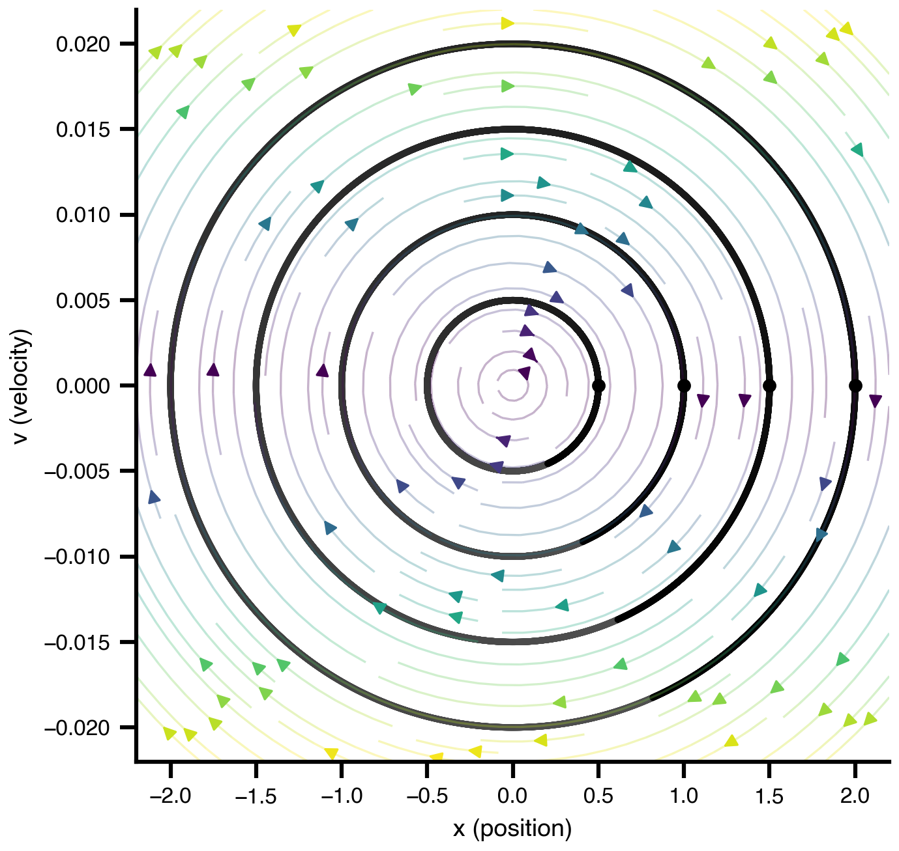

import bsplot
from IPython.display import Markdown, HTMLDynamical Systems — A Spring-Mass Example
1 Dynamical Systems
Before we simulate large-scale brain networks, we need a common language to describe and run dynamical systems. This notebook introduces that language using the most familiar dynamical system there is: a mass on a spring.
Every concept introduced here — state variables, parameters, initial conditions, phase space — carries over directly to neural mass models and whole-brain simulations.
1.1 The Spring Equation
A mass \(m\) attached to a spring with stiffness \(k\) satisfies Newton’s second law:
\[m\,\ddot{x} = -k\,x\]
Rewriting as a first-order system (the standard form for any ODE solver):
\[\dot{x} = v \qquad \dot{v} = -\frac{k}{m}\,x\]
This is a DynamicalSystem: a set of state variables \((x, v)\) with equations of motion, and parameters \((k, m)\) that control the behaviour. Below we define it using the TVBO framework.
from tvbo import Dynamics as DynamicalSystem
from tvbo import SimulationExperiment
bsplot.style.use('tvbo')
system = DynamicalSystem(
state_variables=[
{
"name": "x",
"equation": {"rhs": "v"},
"initial_value": 2.0,
},
{
"name": "v",
"equation": {"rhs": "-(k/m) * x"},
"initial_value": 0.0,
},
],
parameters=[
{"name": "k", "value": 0.0001},
{"name": "m", "value": 1.0},
],
)
Markdown(system.render('markdown'))1.2 Dynamics
1.2.1 State Equations
\[ \dot{x} = v \] \[ \dot{v} = - \frac{k*x}{m} \]
1.2.2 Parameters
| Parameter | Value | Unit | Description |
|---|---|---|---|
| \(k\) | 0.0001 | — | None |
| \(m\) | 1.0 | — | None |
1.3 Initial Conditions
To actually run the system we must pick a starting point \((x_0, v_0)\) — the initial condition.
Think of it as placing the mass at position \(x_0\) and releasing it from rest (\(v_0 = 0\)).
The initial condition determines which trajectory the system follows, but not the overall dynamics — that is governed by the parameters.
system.state_variables['x']['initial_value'] = 2.0
result = SimulationExperiment(dynamics=system).run()
============================================================
STEP 1: Running simulation...
============================================================
Simulation period: 1000.0 ms, dt: 0.01220703125 ms
Transient period: 0.0 ms
Simulation complete.
============================================================
Experiment complete.
============================================================import sys, os
sys.path.insert(0, os.path.abspath('..')) # make notebooks/ importable
from spring_animation import animate_spring
import numpy as np
def save_animation_video(ani, stem, fps=30):
# Static thumbnail: draw first real frame (frame index 0)
ani._init_draw() # sets up blit state
ani._func(0) # calls update(0) → places spring + mass at initial position
ani._fig.savefig(rf"{stem}_thumb.png", bbox_inches="tight")
ani.save(rf"{stem}.gif", writer="pillow", fps=fps)
x_ts = np.asarray(result.data.sel({"variable": "x"})).ravel()
ani = animate_spring(
[x_ts],
orientation="horizontal",
anchor_pos=-3.0,
coil_amplitude=0.15,
mass_sizes=0.3,
labels=["$x$"],
titles=["Spring oscillator"],
n_periods=1,
)
save_animation_video(ani, 'spring_single', fps=30)
1.3.1 Varying initial conditions
Same spring (\(k\) and \(m\) fixed), three different release positions \(x_0\).
Notice: bigger stretch → larger amplitude, same frequency. The frequency \(\omega = \sqrt{k/m}\) depends only on the parameters, not on where you start.
import numpy as np
from spring_animation import animate_spring
# --- 3 initial conditions, same k and m ---
init_xs = [-1.0, -2.0, -3.0]
results_multi = []
for x0 in init_xs:
system.state_variables['x']['initial_value'] = x0
results_multi.append(SimulationExperiment(dynamics=system).run())
ts_arrays = [np.asarray(r.data.sel({"variable": "x"})).ravel() for r in results_multi]
ani = animate_spring(
ts_arrays,
labels=[f'$x_0={x0}$' for x0 in init_xs],
titles=[f'$x_0 = {x0}$' for x0 in init_xs],
mass_sizes=0.4,
orientation="vertical",
anchor_pos=3.5,
n_periods=1,
)
save_animation_video(ani, 'spring_ics', fps=30)
============================================================
STEP 1: Running simulation...
============================================================
Simulation period: 1000.0 ms, dt: 0.01220703125 ms
Transient period: 0.0 ms
Simulation complete.
============================================================
Experiment complete.
============================================================
============================================================
STEP 1: Running simulation...
============================================================
Simulation period: 1000.0 ms, dt: 0.01220703125 ms
Transient period: 0.0 ms
Simulation complete.
============================================================
Experiment complete.
============================================================
============================================================
STEP 1: Running simulation...
============================================================
Simulation period: 1000.0 ms, dt: 0.01220703125 ms
Transient period: 0.0 ms
Simulation complete.
============================================================
Experiment complete.
============================================================
1.4 Phase Space
You just watched three separate time series. Phase space is a more compact way to show all of them at once: instead of plotting \(x\) vs. time, we plot \(x\) (position) vs. \(v\) (velocity) for every moment simultaneously.
- Each closed curve is one trajectory — the system endlessly traces the same loop (energy is conserved).
- Larger loops correspond to larger initial displacements \(x_0\) (more energy).
- The arrows (vector field) show the direction of motion everywhere, independent of any particular trajectory.
import matplotlib.pyplot as plt
fig, ax = plt.subplots()
for init_x in [0.5, 1.0, 1.5, 2.0]:
system.state_variables['x']['initial_value'] = init_x
system.plot(kind='phase', ax=ax, cmap='grey_r')
system.plot(kind='vectorfield', ax=ax, alpha=0.3)
ax.set_xlabel("x (position)")
ax.set_ylabel("v (velocity)")
fig.savefig('phase_space.png', dpi=150, bbox_inches='tight')
1.5 Parameters
Parameters are the knobs of the system. Here we vary the mass \(m\) while keeping the spring constant \(k\) fixed.
The oscillation frequency is:
\[\omega = \sqrt{\frac{k}{m}}\]
For the animations below, we start from a stretched state (\(x_0 < 0\), below equilibrium) so the first motion is an upward snap-back, which is usually more intuitive to interpret visually.
| \(m\) | \(\omega\) | intuition |
|---|---|---|
| small | high | light mass → spring accelerates it quickly → fast oscillation |
| large | low | heavy mass → same spring force has less effect → slow oscillation |
Analogy: a stiff guitar string vibrates faster with less tension (more “resistance” slows it down). Heavier mass = more inertia = slower response to the restoring force.
The box size below encodes mass visually: bigger box = heavier mass.
import numpy as np
from spring_animation import animate_spring
# --- Same x0 and k, 3 different masses m ---
# Heavier mass → lower frequency (ω = sqrt(k/m))
# Box size scales as m^(1/3) so volume ∝ mass
m_values = [0.5, 1.0, 2.0]
x0_fixed = -2.0
k_fixed = system.parameters['k']['value']
results_m = []
for m in m_values:
system.state_variables['x']['initial_value'] = x0_fixed
system.state_variables['v']['initial_value'] = 0.0
system.parameters['m']['value'] = m
results_m.append(SimulationExperiment(dynamics=system).run())
system.parameters['m']['value'] = 1.0 # restore default
ts_m = [np.asarray(r.data.sel({"variable": "x"})).ravel() for r in results_m]
sizes = [0.4 * (m ** (1/3)) for m in m_values] # cube-root: volume ∝ m
titles = [rf'$m={m},\, \omega={(k_fixed/m)**0.5:.4f}$' for m in m_values]
ani = animate_spring(
ts_m,
labels=[f'$m={m}$' for m in m_values],
titles=titles,
mass_sizes=sizes,
orientation="vertical",
anchor_pos=3.5,
n_periods=1,
)
save_animation_video(ani, 'spring_mass', fps=30)
============================================================
STEP 1: Running simulation...
============================================================
Simulation period: 1000.0 ms, dt: 0.01220703125 ms
Transient period: 0.0 ms
Simulation complete.
============================================================
Experiment complete.
============================================================
============================================================
STEP 1: Running simulation...
============================================================
Simulation period: 1000.0 ms, dt: 0.01220703125 ms
Transient period: 0.0 ms
Simulation complete.
============================================================
Experiment complete.
============================================================
============================================================
STEP 1: Running simulation...
============================================================
Simulation period: 1000.0 ms, dt: 0.01220703125 ms
Transient period: 0.0 ms
Simulation complete.
============================================================
Experiment complete.
============================================================
1.6 From Toy Models to Better Realism
The same framework lets us add more realistic assumptions. For example, we can include:
- damping (energy loss / friction)
- a constant load term (gravity-like bias)
This changes both the transient behaviour (oscillations decay) and the equilibrium level.
from tvbo.datamodel.schema import Parameter
# Copy System
realistic = system.copy()
# Change State-Equation
realistic.state_variables["v"]["equation"]["rhs"] = "-(k/m) * x - (c/m) * v + g_eff"
# Add Parameters
realistic.parameters["c"] = Parameter(name="c", value=0.006)
realistic.parameters["g_eff"] = Parameter(name="g_eff", value=0.00015)
r_ideal = SimulationExperiment(dynamics=system).run()
r_real = SimulationExperiment(dynamics=realistic).run()
# x_eq = m * g_eff / k (where the damped system settles)
g_eff = realistic.parameters["g_eff"]["value"]
k = realistic.parameters["k"]["value"]
m = realistic.parameters["m"]["value"]
x_eq_real = m * g_eff / k
ani = animate_spring(
[r_ideal.data.sel({"variable": "x"}), r_real.data.sel({"variable": "x"})],
labels=["toy model", "damped + load"],
titles=["Toy model", "Damped + load"],
equilibrium=[0.0, x_eq_real],
mass_sizes=0.4,
orientation="vertical",
anchor_pos=3.5,
n_periods=3,
)
save_animation_video(ani, "spring_realism", fps=30)
============================================================
STEP 1: Running simulation...
============================================================
Simulation period: 1000.0 ms, dt: 0.01220703125 ms
Transient period: 0.0 ms
Simulation complete.
============================================================
Experiment complete.
============================================================
============================================================
STEP 1: Running simulation...
============================================================
Simulation period: 1000.0 ms, dt: 0.01220703125 ms
Transient period: 0.0 ms
Simulation complete.
============================================================
Experiment complete.
============================================================